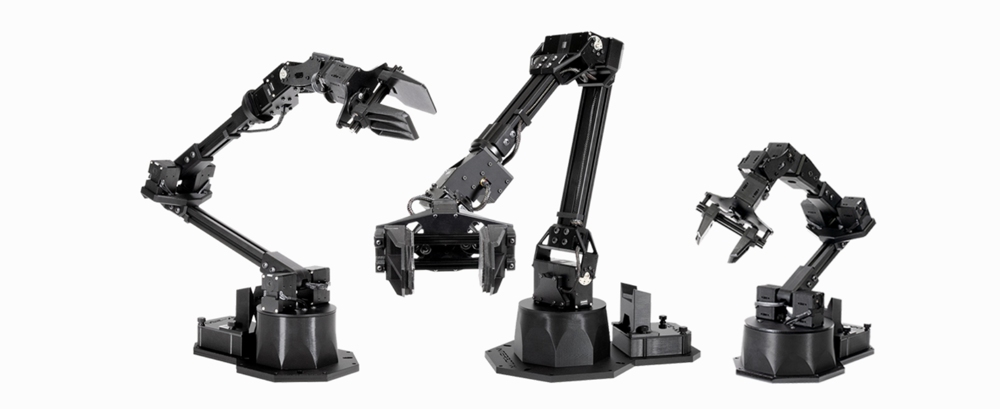

🤖 trpy — Python Interface for Trossen Robotic Arms
Feb 2025Type: Open-source Robotics Library
Category: Robot Control / HRI / Prototyping
Overview
Lightweight Python library for controlling Trossen robotic arms via CLI and scripts, designed for rapid experimentation without requiring full ROS2 setup.
Impact
- Enabled faster prototyping for Human-Robot Interaction (HRI) research
- Lowered barrier for students unfamiliar with ROS2
- Supported multi-arm control in research workflows
Key Features
- Record & playback motion sequences
- Auto-homing routines
- Motion smoothing filters
- Asynchronous control for multiple arms
My Contribution
- Designed and implemented full library architecture
- Built async control system for multi-arm setups
- Integrated usability-focused CLI for rapid testing
Tech: Python, Robotics Control, Async Systems
